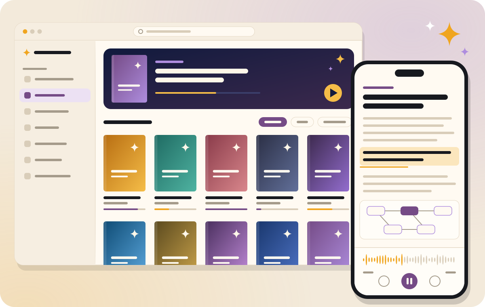
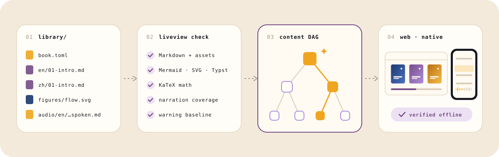

01Read
Editorial calm for dense ideas.
Responsive typography, real chapters, search, and a bookshelf that treats books as books—not folders.
Self-hosted technical library
LiveView turns Markdown, technical assets, translations, and audio into one publication—read on any screen, heard with sentence-synced narration, and kept on your devices as verified, content-addressed copies.
Your books. Your storage. Your offline copy.

One publication, three ways in
A technical book should not become a different product when you switch device, language, or mode. LiveView keeps the publication whole.
Responsive typography, real chapters, search, and a bookshelf that treats books as books—not folders.
Text and audiobook renditions share identity. Sentence-level timing keeps narration and reading position in step—offline, on the lock screen.
Charts, Mermaid, math, Typst, data, PDFs, and interactive views keep their meaning instead of flattening into images.
Offline by construction
Text, covers, backdrops, documents, and audio are Merkle DAG resources. A device keeps exactly what it verified.
Only the changed path moves through publication and sync—never a full rebuild of the corpus.
Source, PostgreSQL, S3-compatible storage, and delivery stay on infrastructure you control.
Every screen, full depth
Desktop exposes the library's structure. Phones are one-column and reachable without simplifying the content. Both read the same publication.
Format-native
The checker and the renderer accept the same formats, and every non-prose resource has a deliberate narration path when the reader switches to audio.
.md · GFM · footnotes
Chapters, footnotes, and GitHub-flavored syntax.
KaTeX · LaTeX
Formulas rendered for the page and spoken deliberately.
.typ
Typeset blocks compiled into the chapter.
fenced blocks
Theme-native diagrams for light and dark.
inline · file
Vector figures checked before publishing.
.excalidraw
Hand-drawn sketches that stay crisp.
.csv · .tsv
Tables that remain data, not pictures.
JSON · JSONC · JSON5
Structured data, validated by the checker.
PNG · WebP · AVIF · SVG
Content-addressed artwork and figures.
.pdf · .html
Embedded documents and standalone pages, kept for offline reading.
*.interactive-view.json
Signals, controls, computed metrics, and charts.
*.spoken.md
Audiobook scripts with sentence timing marks.
One content contract
Preview, checking, publication, web reading, and native sync share one set of parsing rules. The content you checked is the content your reader receives.

slug = "distributed-systems"
title = "Distributed Systems"
default_lang = "en"
cover = "cover.webp"
tags = ["format.guide", "replication"]
[langs.zh]
label = "简体中文"
[renditions.audio]
label = "Listen"
langs = ["en"]Chapters, translations, artwork, and spoken scripts live beside one small manifest. Tags stay yours—LiveView never imposes a taxonomy.
liveview check and gate use renderer-compatible parsers and a warning baseline, so regressions never reach a shelf.
Reader updates ship over the air; the native shell adds background audio and lock-screen controls.
Open source, ready to build
Start with a folder and no services. Add PostgreSQL, S3-compatible storage, and the native shell when the library needs durable publishing and verified offline access.
# 1 · Build
$ git clone https://github.com/dravengarden/liveview.git
$ cd liveview && nix build
# 2 · Preview any folder, no services
$ cd /path/to/your/library
$ /path/to/liveview/result/bin/liveview preview --open
✓ Serving library at http://127.0.0.1:4160
# 3 · Check before you publish
$ /path/to/liveview/result/bin/liveview check . --deny-warnings